中心极限定理和置信区间
Central Limit Theorem
中心极限定理指的是给定一个任意分布的总体。我每次从这些总体中随机抽取 n 个抽样，一共抽 m 次。 然后把这
m 组抽样分别求出平均值。 这些平均值的分布接近正态分布。 --知乎
Confidence Intervals
In practice it is very common to consider α = 0:05, i.e., a 95% confidence interval.
计算方法
（1）Confidence interval of mean with known variance
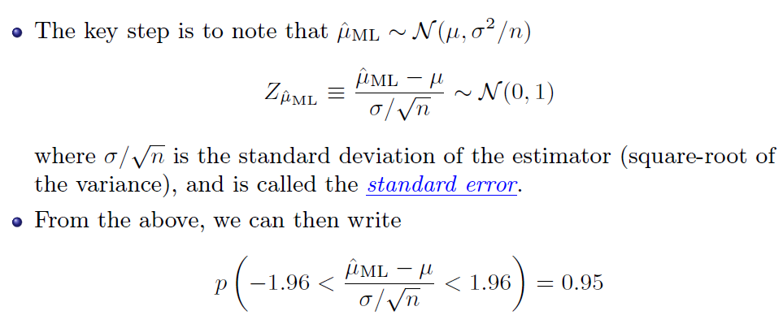
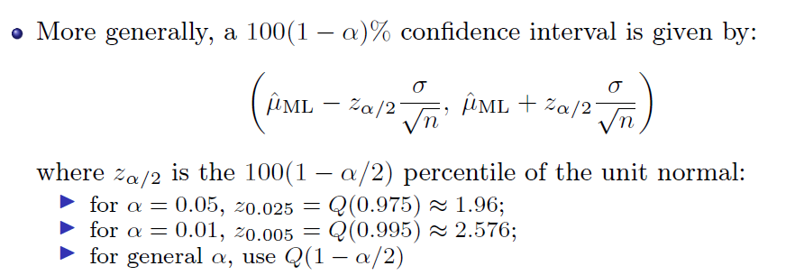
(2)Confidence interval of mean with unknown variance
 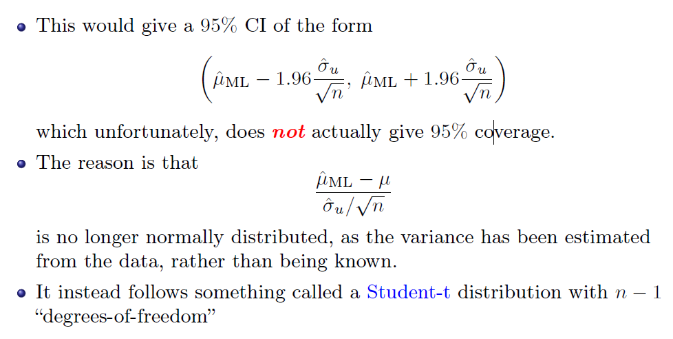
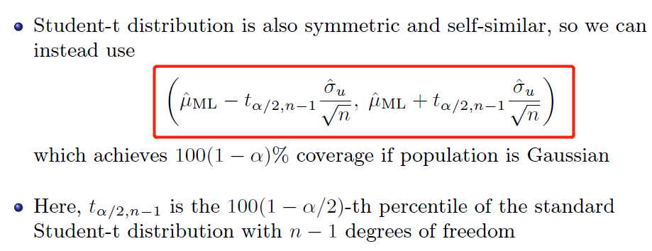
(3)Confidence Intervals for Difference of Normal Means (Known Variance)
[The difference between two samples]
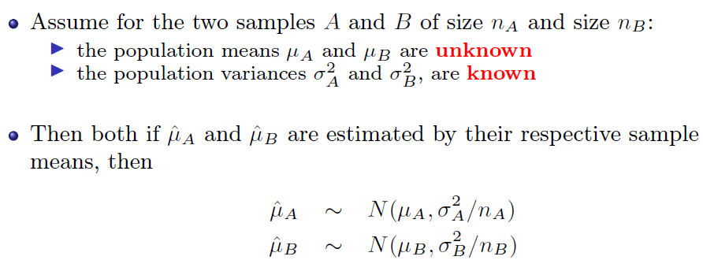
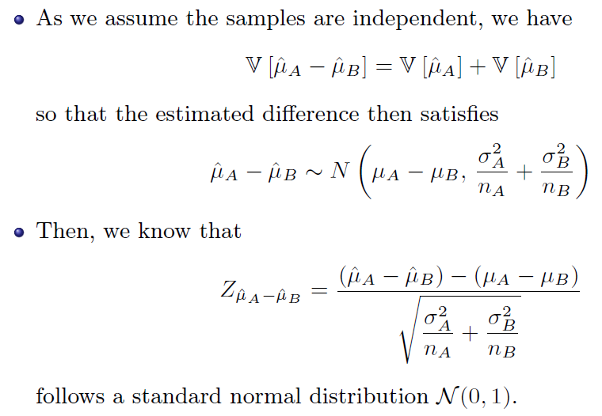
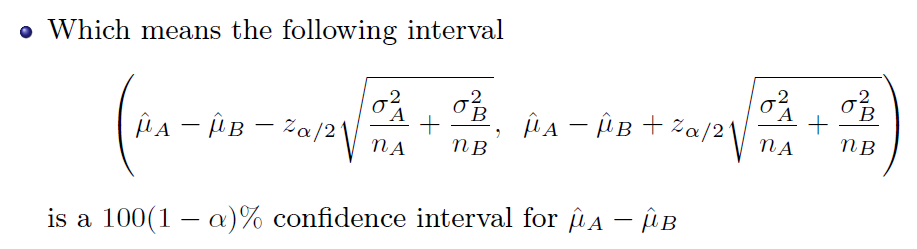
(4)Confidence Intervals for Difference of Normal Means (Unknown Variance)
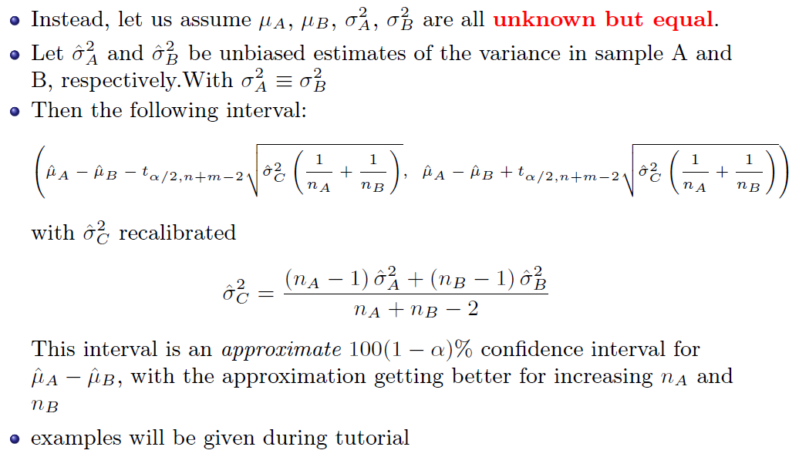
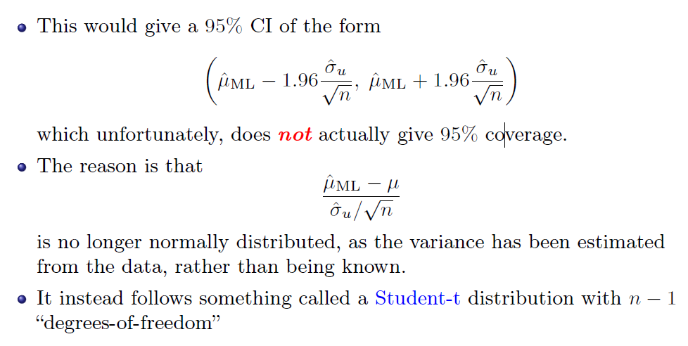
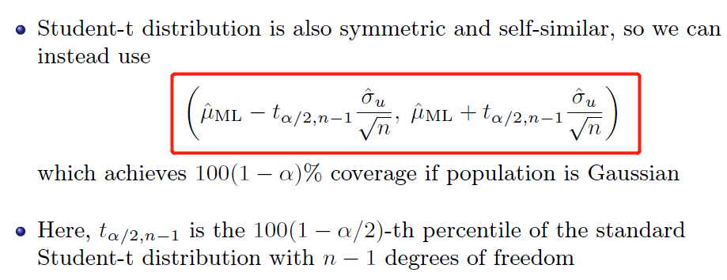
(3)Confidence Intervals for Difference of Normal Means (Known Variance)
[The difference between two samples]
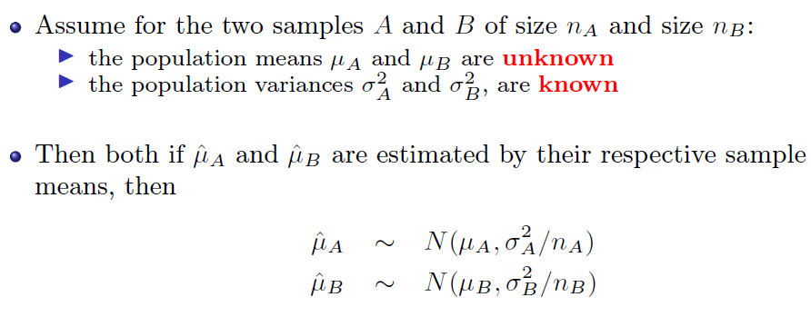
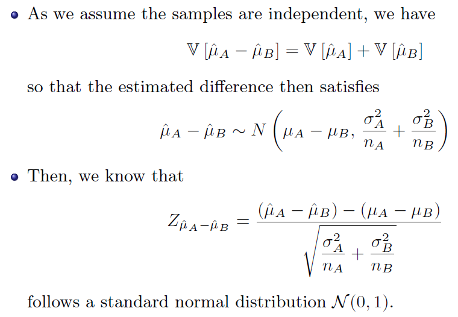
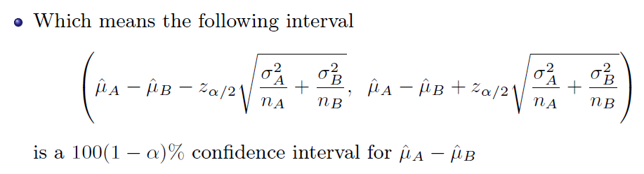
(4)Confidence Intervals for Difference of Normal Means (Unknown Variance)
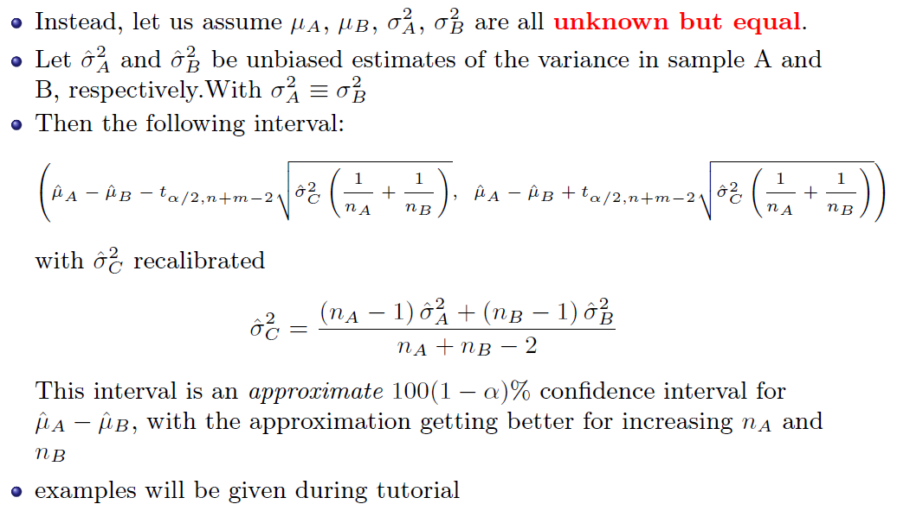